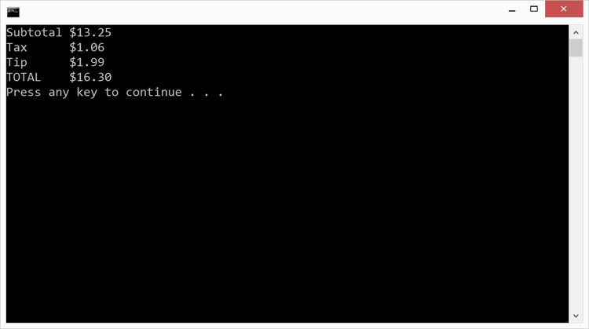

Duration
30 minutes
Homework goals
In this homework, you will write a program to compute a restaurant bill. You will calculate and output four values: subtotal, tax, tip, and total. Below is the output from the finished application.
Required assets
The provided Homework Resources/Completed folder contains a completed version of the program you can use to check your work. Please make sure you have this folder before you begin.
Steps
Below are the high-level instructions to implement the program.
Bill Calculation Program
- Create a new Console Project in Visual Studio. Name the Project and Solution BillCalculation.
-
Your entire program will be written inside
Maindefined in the file Program.cs. - Please delete the
Console.WriteLinethat Visual Studio generated insideMain. -
Add the following constants to your program.
const double SodaPrice = 1.50; const double SandwichPrice = 4.50; const double ChipsPrice = 1.25; const double TaxRate = 0.08; const double TipRate = 0.15;
-
Calculate the subtotal, tax, tip, and total for a customer that ordered 2 sodas, 2 sandwiches, and
1 bag of chips. You can do this any way that seems appropriate to you. One suggested approach
is to declare variables to hold each value. Use
intvariables for the number or each item anddoublevariables for amounts of money. -
Output the subtotal, tax, tip, and total to the Console window. Use the
Cformat specifier withConsole.WriteLineas shown below to automatically include your local currency symbol in the output.Console.WriteLine("Tip {0:C}", tip); - Build and run the program to test your work.
Summary
This homework gave you practice with constants, variables, and mathematical operations. It also let you work with formatted text output, in particular, theC format
specifier for currency values.